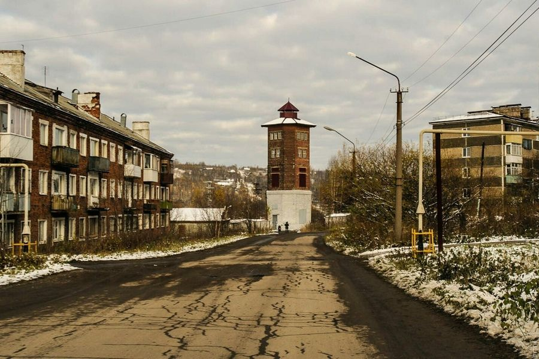
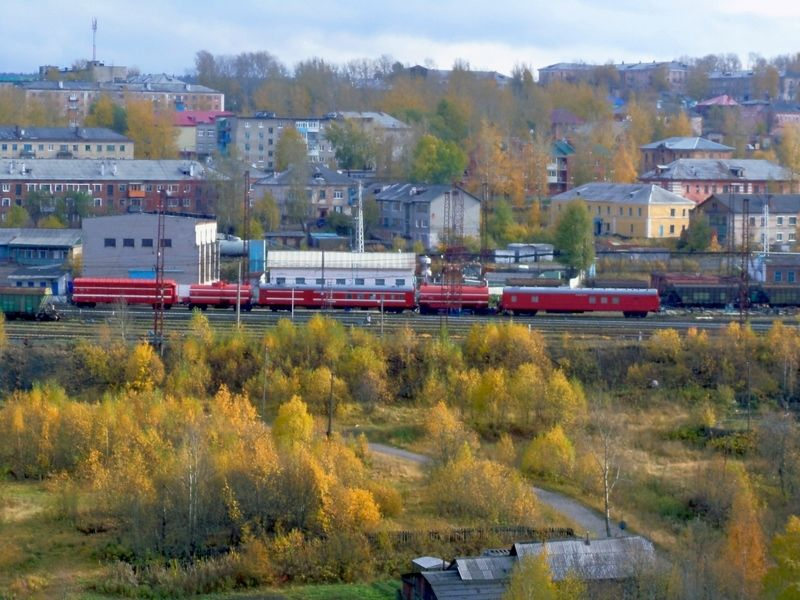
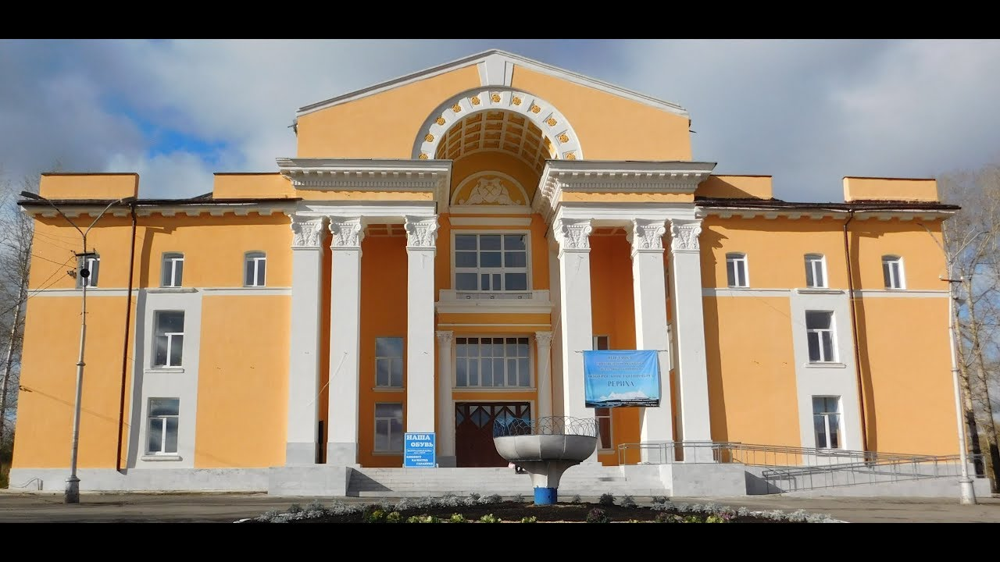
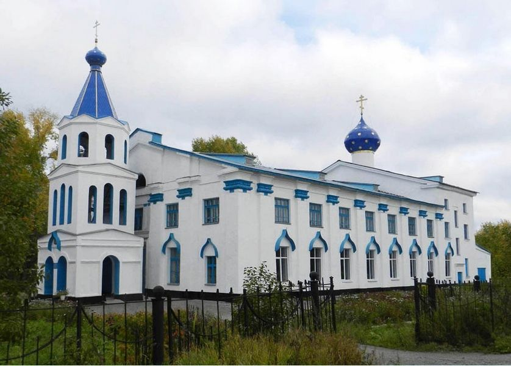
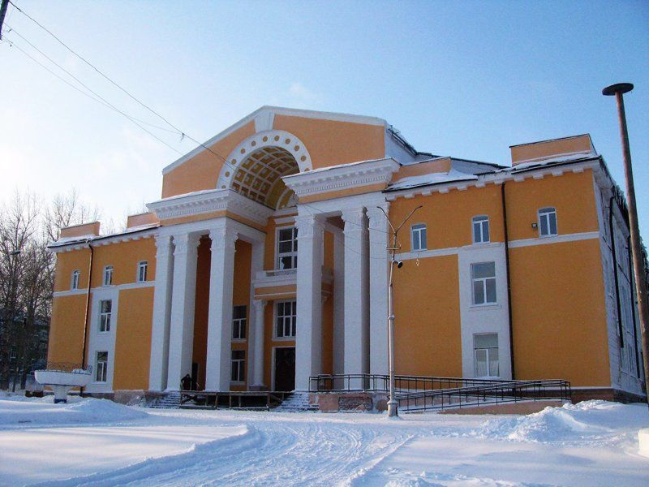
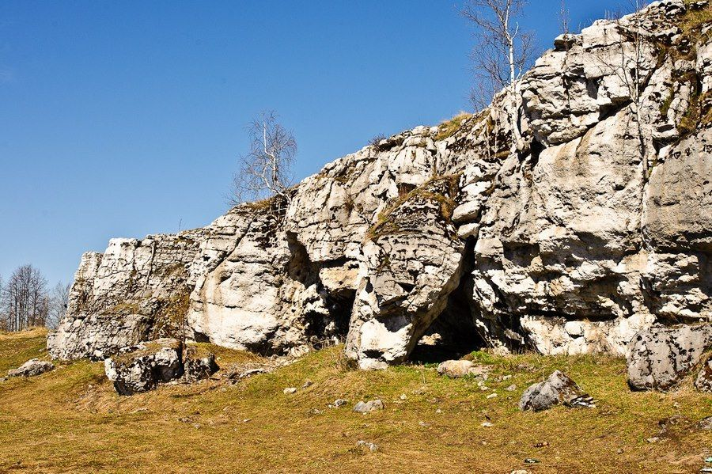

Город Кизел совсем крошечный, его численность едва превышает 13 тысяч человек. Он находится на Среднем Урале, более чем в 200 километрах от областного центра, а площадь немногим больше 75 квадратных километров. Тем не менее, туристов он привлекает своей славой города-призрака, а в окрестностях до сих пор можно найти множество достопримечательностей, оставшихся со времён расцвета города, и уникальных природных объектов.
Кизел находится в Пермском крае. Это центр Кизеловского района, и он расположен вдоль правого притока реки Вильвы, в 244 километрах от Перми. Когда-то Кизел был известным городом, где активно велась добыча угля. Но с закрытием шахт люди стали уезжать из него, что очень сильно сократило численность население и его причислили к "Умирающим" городам Пермского края.Среди лесов остались затеряны таинственные здания, природа переплелась вместе с домами – это-то стало привлекать туристов. На фото можно увидеть, что Кизел превратился в настоящий город-призрак, который так и манит смельчаков со всех уголков России.
История города
Кизел был основан ещё в 1750 году, когда на его территории обнаружили железную руду. Хотя сначала это был рабочий посёлок. С открытием угольного месторождения в 1786 году он начал активно развиваться. Кизеловский завод, открытый в 1789 году, стал началом эксплуатации угольного бассейна.
В конце XIX века было проложено железнодорожное сообщение, что обеспечило приток жителей и активную торговлю. Объём добычи угля возрастал, и к началу XX века на территории посёлка действовало уже 36 шахт – значительное число для столь маленькой территории.Именно благодаря местных шахтам Урал занял в 1900 году 3-е место по количеству угледобычи на территории Российской империи. Уступил он лишь Донецкому бассейну и Польше.
Происхождение названия
Существует две легенды, как Кизел получил своё имя. Первая связывает его со словом «кызыл» татарского происхождения. Это означает «красный». Берега Вильвы поросли шиповником и бузиной, которые имеют ягоды красного цвета, что и дало название.Вторая легенда гласит, что городок назван от слова «кыдз йыл», что на языке местного населения значит «берёзовое верховье» — в районе растёт много берёзовых рощ.
Достопримечательности:
- Церковь святителя Николая
- Дворец Культуры
- Пещера Медвежья